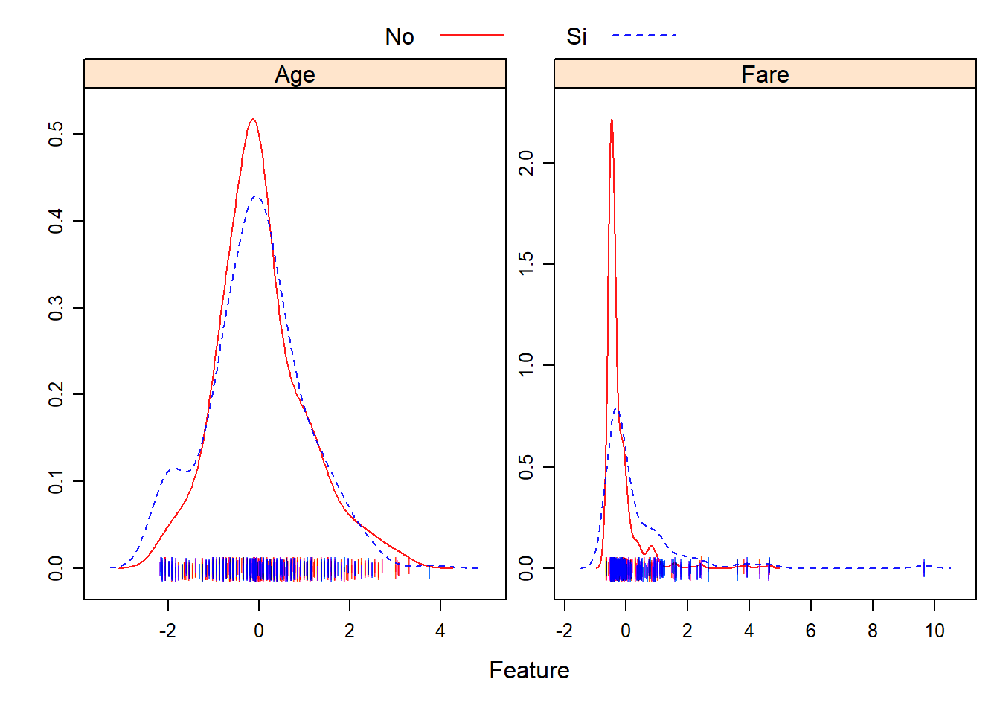

8 La librería caret
R es uno de los lenguajes de programación que más se usa en muchas disciplinas como la biomedicina, la economía y por supuesto, la estadísica. Al tratarse de un software libre, innumerables usuarios han podido implementar sus algoritmos, dando lugar a un número muy elevado de librerías donde encontrar prácticamente todas las técnicas de machine learning existentes. Sin embargo, esto tiene un lado negativo, cada paquete tiene una sintaxis, estructura e implementación propia, lo que dificulta su aprendizaje. El paquete caret (Classification And REgression Training ), desarrollado por Max Kuhn, es una interfaz que unifica bajo un único marco cientos de funciones de distintos paquetes, facilitando en gran medida todas las etapas de de preprocesado, entrenamiento, optimización y validación de modelos predictivos.
El paquete caret ofrece tal cantidad de posibilidades que, difícilmente, pueden ser mostradas con un único ejemplo. En este capítulo describiremos toda las capacidades de esta libería con un un ejemplo utilizando regresión logística con la que ya estamos familiarizados. El resto de métodos de aprendizaje automático que veremos en el curso también se llevarán a cabo con esta librería y algunas específicas de cada método.
Otros proyectos similares a caret son: mlr3, H20 que veremos en este curso y que está orientado a Big Data y tidymodels que forma parte del mundo tydiverse.
Hay muchas funciones de modelado diferentes en R. Algunas tienen una sintaxis diferente para el entrenamiento y / o predicción de modelos. El paquete comenzó como una forma de proporcionar una interfaz uniforme para las funciones mismas, así como una forma de estandarizar las tareas comunes (como el ajuste de parámetros y la importancia de las variables).
La instalación de caret puede ser muy pesada ya que tiene muchas dependencias (todos las librerías que implementan los métodos de aprendizaje automático que se quieran usar). Es por ello que se recomienda instalar la versión mínima y luego ir instalando aquellas librerías que se requieran en función del método que se pretenda usar.
install.packages("caret",
dependencies = c("Depends", "Suggests"))Luego la librería se carga de la forma usual
library(caret)En este capítulo veremos como realizar:
- Preprocesamiento (con
carety conrecipes) - Visualización
- División de datos
- Selección de variables
- Ajuste de modelo mediante remuestreo
- Estimación de la importancia de variables
Para ilustrar el uso de esta librería con datos reales usaremos la base de datos Titanic que está en la librería con su mismo nombre. Este conjunto de datos contiene información sobre los pasajeros del Titanic, el transatlántico británico que se hundió en abril de 1912 durante su viaje inaugural desde Southampton a Nueva York. Entre la información almacenada se encuentran la edad, género, características socio-económicas de los pasajeros y si sobrevivieron o no al naufragio (variable respuesta). Este ejemplo puede que no sea muy útil desde un punto de vista científico (en las prácticas trabajaremos con otrods que sí son útiles), pero tienen una serie de características que los hacen idóneos para ser utilizados como ejemplo introductorio al machine learning:
Contiene suficientes observaciones para entrenar modelos que consigan un poder predictivo alto.
Incluye tanto variables continuas como cualitativas, lo que permite mostrar diferentes análisis exploratorios.
La variable respuesta es binaria. Aunque la mayoría de los algoritmos de clasificación mostrados en este capítulo se generalizan para múltiples clases, su interpretación suele ser más sencilla cuando solo hay dos.
Contiene valores faltantes (missing data). La forma en que se manejan estos registros (eliminación o imputación) influye en gran medida en el modelo final.
Necesitan realizar un pre-procesamiento de datos (eliminación y creación de variables).
Además, se trata de unos datos cuyas variables pueden entenderse de forma sencilla. Es intuitivo comprender el impacto que puede tener la edad, el sexo, la localización del camarote… en la supervivencia de los pasajeros. Este aspecto es muy importante a al hora de crear buenos modelos predictivos, ya que, comprender a fondo el problema que se pretende modelar es lo más importante para lograr buenos resultados.
La librería titanic contiene un conjunto de datos de entrenamiento y otros de test facilitados en la plataforma Kaggle que contiene muchos conjuntos de datos para trabajar con problemas de aprendizaje automático. Los datos test sólo sirven para tener otro conjunto de datos en los que evaluar el modelo, pero no tienen la variable resultado por lo que no se pueden usar para crear el modelo predictivo (Kaggle los usa para ver quién proponer el mejor modelo).
Los datos se cargan de forma habitual
library(tidyverse)
library(titanic)
datos <- titanic_train8.1 Pre-procesado
8.1.1 Creación de variables
El primer paso antes de realizar cualquier análisis estadístico, y en particular para entrenar un modelo predictivo, es llevar a cabo una exploración descriptiva de los datos. Este proceso permite entender mejor que información contiene cada variable, así como detectar posibles errores ya que podríamos encontrarnos con los siguientes problemas:
Que una columna se haya almacenado con el tipo incorrecto: una variable numérica está siendo reconocida como texto.
Que una variable contenga valores que no tienen sentido: para indicar que no se dispone de la altura de una persona se introduce el valor cero o un espacio en blanco. No existe nadie cuya altura sea cero.
Que en una variable de tipo numérico se haya introducido una palabra en lugar de un número.
Según la información disponible en Kaggle, nuestras variables contienen la siguiente información:
PassengerId: identificador único del pasajero.
Survived: si el pasajero sobrevivió al naufragio, codificada como 0 (no) y 1 (si). Esta es la variable respuesta que interesa predecir.
Pclass: clase a la que pertenecía el pasajero: 1, 2 o 3.
Name: nombre del pasajero.
Sex: sexo del pasajero.
Age: edad del pasajero.
SibSp: número de hermanos, hermanas, hermanastros o hermanastras en el barco.
Parch: número de padres e hijos en el barco.
Ticket: identificador del billete.
Fare: precio pagado por el billete.
Cabin: identificador del camarote asignado al pasajero.
Embarked: puerto en el que embarcó el pasajero.
Por ello, empezaremos comprobando que cada variable se ha almacenado con el tipo de valor que le corresponde, es decir, que las variables numéricas sean números y las cualitativas factor, character o booleanas. Recordemos que en R, cuando la variable es cualitativa, conviene convertirla en variable factor para que las funciones que implementan muchos de los métodos estadísticos que queremos usar puedan analizarlas de forma conveniente (i.e. dummy variables).
glimpse(datos)Rows: 891
Columns: 12
$ PassengerId <int> 1, 2, 3, 4, 5, 6, 7, 8, 9, 10, 11, 12, 13, 14, 15, 16, 17...
$ Survived <int> 0, 1, 1, 1, 0, 0, 0, 0, 1, 1, 1, 1, 0, 0, 0, 1, 0, 1, 0, ...
$ Pclass <int> 3, 1, 3, 1, 3, 3, 1, 3, 3, 2, 3, 1, 3, 3, 3, 2, 3, 2, 3, ...
$ Name <chr> "Braund, Mr. Owen Harris", "Cumings, Mrs. John Bradley (F...
$ Sex <chr> "male", "female", "female", "female", "male", "male", "ma...
$ Age <dbl> 22, 38, 26, 35, 35, NA, 54, 2, 27, 14, 4, 58, 20, 39, 14,...
$ SibSp <int> 1, 1, 0, 1, 0, 0, 0, 3, 0, 1, 1, 0, 0, 1, 0, 0, 4, 0, 1, ...
$ Parch <int> 0, 0, 0, 0, 0, 0, 0, 1, 2, 0, 1, 0, 0, 5, 0, 0, 1, 0, 0, ...
$ Ticket <chr> "A/5 21171", "PC 17599", "STON/O2. 3101282", "113803", "3...
$ Fare <dbl> 7.2500, 71.2833, 7.9250, 53.1000, 8.0500, 8.4583, 51.8625...
$ Cabin <chr> "", "C85", "", "C123", "", "", "E46", "", "", "", "G6", "...
$ Embarked <chr> "S", "C", "S", "S", "S", "Q", "S", "S", "S", "C", "S", "S...Observamos que el único caso en el que el tipo de valor no se corresponde con la naturaleza de la variable es Survived. Aunque esta variable está codificada como 1 si el pasajero sobrevivió y 0 si murió, no conviene almacenarla en formato numérico, ya que esto puede llevar a errores como el de tratar de calcular su media. Para evitar este tipo de problemas, se recodifica la variable para que sus dos posibles niveles sean Si/No y se convierte a factor. Además, esta re-codificación también ayudará a que los resultados y gráficas se puedan leer fácilmente.
datos <- mutate(datos, Survived = as.factor(ifelse(Survived == 1, "Si", "No")))
table(datos$Survived)
No Si
549 342 La variable Pclass es cualitativa ordinal, es decir, toma distintos valores cualitativos ordenados siguiendo una escala establecida, aunque no es necesario que el intervalo entre mediciones sea uniforme. Por ejemplo, se asume que la diferencia entre primera y segunda clase es menor que la diferencia entre primera y tercera, sin embargo, las diferencias entre primera-segunda y segunda-tercera no tiene por qué ser iguales. Es por ello que es preferible guardar esta variable como factor
datos <- mutate(datos, Pclass = as.factor(Pclass))
table(datos$Pclass)
1 2 3
216 184 491 Las variables SibSp y Parch son cuantitativas discretas, pueden tomar únicamente determinados valores numéricos. En este caso, al tratarse de número de personas (familiares e hijos), solo pueden ser números enteros. No existe una norma clara sobre como almacenar estas variables. Para este estudio exploratorio, dado que solo toman unos pocos valores, se decide almacenarlas como factor.
datos <- mutate(datos, SibSp = as.factor(SibSp))
datos <- mutate(datos, Parch = as.factor(Parch))Las variables Sex y Embarked también se convierten a tipo factor.
datos <- mutate(datos, Sex = as.factor(Sex))
datos <- mutate(datos, Embarked = as.factor(Embarked))Las variables Cabin y Embarked contienen "". Esto consideraría a este valor como una categoría, por lo que habría que hacer
datos$Cabin[datos$Cabin==""] <- NA
datos$Embarked[datos$Embarked==""] <- NA8.1.2 Predictores con poca variabilidad
En algunas situaciones, el mecanismo de generación de datos puede crear predictores que solo tienen un valor único (es decir, un “predictor de varianza cero”). Para la mayoría de modelos de aprendizaje automático esto puede provocar que el modelo se bloquee o que el ajuste sea inestable.
De manera similar, los predictores categóricos pueden tener alguna categoría que ocurren con frecuencias muy bajas. Por ejemplo, esto ocurre con la variable número de hijos en el barco
table(datos$Parch)
0 1 2 3 4 5 6
678 118 80 5 4 5 1 La preocupación aquí es que estos predictores pueden convertirse en predictores de varianza cero cuando los datos se dividen en submuestras de validación cruzada / bootstrap o que algunas muestras pueden tener una influencia muy grande en el modelo (valores influyentes). Es posible que estos predictores de “varianza cercana a cero” deban identificarse y eliminarse antes del modelado.
Para identificar estos tipos de predictores, se pueden calcular las siguientes dos métricas:
la frecuencia del valor más prevalente sobre el segundo valor más frecuente (llamado “índice de frecuencia”), que estaría cerca de uno para los predictores con buen comportamiento y muy grande para datos altamente desequilibrados y
el “porcentaje de valores únicos” que es el número de valores únicos dividido por el número total de muestras (multiplicado por 100) que se acerca a cero a medida que aumenta la granularidad de los datos.
Si la relación de frecuencia es mayor que un umbral preestablecido y el porcentaje de valor único es menor que un umbral, podríamos considerar que un predictor tiene una varianza cercana a cero.
No queremos identificar falsamente los datos que tienen baja granularidad pero están distribuidos de manera uniforme, como los datos de una distribución uniforme discreta. El uso de ambos criterios no debería detectar falsamente tales predictores.
Para realizar estos cálculos podemos usar la función nearZeroVar () (el argumento saveMetrics se puede usar para mostrar los detalles y - por defecto el valor predeterminado es FALSE):
nzv <- nearZeroVar(datos, saveMetrics= TRUE)
nzv freqRatio percentUnique zeroVar nzv
PassengerId 1.000000 100.0000000 FALSE FALSE
Survived 1.605263 0.2244669 FALSE FALSE
Pclass 2.273148 0.3367003 FALSE FALSE
Name 1.000000 100.0000000 FALSE FALSE
Sex 1.837580 0.2244669 FALSE FALSE
Age 1.111111 9.8765432 FALSE FALSE
SibSp 2.909091 0.7856341 FALSE FALSE
Parch 5.745763 0.7856341 FALSE FALSE
Ticket 1.000000 76.4309764 FALSE FALSE
Fare 1.023810 27.8338945 FALSE FALSE
Cabin 1.000000 16.4983165 FALSE FALSE
Embarked 3.833333 0.3367003 FALSE FALSELa función nearZeroVar devuelve las posiciones con las variables marcadas como problemáticas. Podríamos crear una base de datos sin variables problemáticas de las siguiente forma:
nzv <- nearZeroVar(datos)
nzvinteger(0)filteredDatos <- select(datos, -all_of(nzv))
dim(datos)[1] 891 12dim(filteredDatos)[1] 891 12En este caso no hemos filtrado ninguna porque ninguna ha devuelto TRUE en las columnas zeroVar y nzv del objeto nzv cuando indicamos saveMetrics= TRUE.
8.1.3 Identificación de predictores correlacionados
Algunos de los modelos que vamos a estudiar pueden tratar con predictores correlacionados (como pls). Sin embargo, otros modelos pueden beneficiarse al reducir el nivel de correlación entre los predictores.
Dada una matriz de correlación, la función findCorrelation() es útil para marcar los predictores que deben ser eliminados por su alta correlación con otros:
descrCor <- cor(filteredDatos)
highCorr <- sum(abs(descrCor[upper.tri(descrCor)]) > .99)Dado que en nuestro caso la mayoría de variables son categóricas, no tiene mucho sentido llevar a cabo este pre-proceso. Además, la función cor() sólo puede aplicarse a datos continuos. Existen otras funciones para calcular las correlaciones entre variables categóricas, que deberían implementarse de forma manual.
8.1.4 Centrado y escalado
En ocasiones es recomendable centrar y escalar las variables continuas para evitar que aquellas vairables con rangos mayores tengan más importancia. Esto se puede hacer de forma sencilla con la función preProcess de la siguiente manera
datosTransf <- preProcess(datos, method=c("center", "scale"))
datosTransfCreated from 183 samples and 12 variables
Pre-processing:
- centered (3)
- ignored (9)
- scaled (3)Vemos que este escalado y centrado no se ha aplicado a 7 de las 12 variables ya que no variables categóricas o carácter.
También podemos transformar nuestros datos para garantizar normalidad utilizando transformacines exponenciales (“expoTrans”), Box-Cox (“BoxCox”) o Yeo-Johnson (“YeoJohnson”). Esto se puede hacer de forma sencilla mediante
preProc <- preProcess(datos, method=c("center", "scale", "YeoJohnson"))
preProcCreated from 183 samples and 12 variables
Pre-processing:
- centered (3)
- ignored (9)
- scaled (3)
- Yeo-Johnson transformation (3)
Lambda estimates for Yeo-Johnson transformation:
0.71, 0.76, -0.1Los valores Lambda corresponden a las diferentes transformaciones usadas para cada unos de las variables según la definición que se puede encontrar aquí. Este objeto tiene toda la información para centrar, escalar, transformar, e incluso eliminar o no variables.
8.1.5 Imputación
En el capítulo de modelización ya hablamos de este tema. La librería caret facilita la imputación mediante la función preProcess(). Basta con usar en el argumento method cualquiera de estas approximaciones: “knnImpute,” “bagImpute,” “medianImpute.”
NOTA: también se podría usar “zv” y “nzv” para eliminar aquellos predictores con poca variabilidad, así que todos los pasos se pueden hacer con la función preProcess() [ver ayuda de la función para más detalles]
8.1.6 Pre-procesado con la librería recipes
El preprocesado de datos engloba aquellas transformaciones de los datos hechas con la finalidad de que puedan ser aceptados por el algoritmo de machine learning o que mejoren sus resultados. Todo preprocesado de datos debe aprenderse de las observaciones de entrenamiento y luego aplicarse al conjunto de entrenamiento y al de test. Esto es muy importante para no violar la condición de que ninguna información procedente de las observaciones de test puede participar o influir en el ajuste del modelo. Aunque no es posible crear un único listado, algunos pasos de preprocesado que más suelen aplicarse en la práctica son:
Imputación de valores ausentes
Exclusión de variables con varianza próxima a cero
Reducción de dimensionalidad
Estandarización de las variables numéricas
Binarización de las variables cualitativas
El paquete caret incorpora muchas funciones para preprocesar los datos. Sin embargo, para facilitar todavía más el aprendizaje de las transformaciones, únicamente con las observaciones de entrenamiento, y poder aplicarlas después a cualquier conjunto de datos, el mismo autor ha creado el paquete recipes.
La idea detrás de este paquete es la siguiente:
- Definir cuál es la variable respuesta, los predictores y el set de datos de entrenamiento,
recipe(). - Definir todas las transformaciones (escalado, selección, filtrado…) que se desea aplicar,
step_(). - Aprender los parámetros necesarios para dichas transformaciones con las observaciones de entrenamiento
rep(). - Aplicar las trasformaciones aprendidas a cualquier conjunto de datos
bake().
En los siguientes apartados, se almacenan en un objeto recipe todos los pasos de preprocesado y, finalmente, se aplican a los datos.
8.1.6.1 Imputación de valores ausentes
Para ver qué cantidad de datos faltantes hay podemos crear la siguiente figura:
datos_long <- datos %>% gather(key = "variable", value = "valor", -PassengerId)
datos_long %>%
group_by(variable) %>%
dplyr::summarize(porcentaje_NA = 100 * sum(is.na(valor)) / length(valor)) %>%
ggplot(aes(x = reorder(variable, desc(porcentaje_NA)), y = porcentaje_NA)) +
geom_col() +
labs(title = "Porcentaje valores ausentes por variable",
x = "Variable", y = "Porcentaje NAs") +
theme_bw()
Podemos observar que las variables “Cabin,” “Age” y “Embarked” contienen valores ausentes. La gran mayoría de algoritmos no aceptan observaciones incompletas, por lo que, cuando el set de datos contiene valores ausentes, se puede:
Eliminar aquellas observaciones que estén incompletas.
Eliminar aquellas variables que contengan valores ausentes.
Tratar de estimar los valores ausentes empleando el resto de información disponible (imputación).
Las primeras dos opciones, aunque sencillas, suponen perder información. La eliminación de observaciones solo puede aplicarse cuando se dispone de muchas y el porcentaje de registros incompletos es muy bajo. En el caso de eliminar variables, el impacto dependerá de cuanta información aporten dichas variables al modelo.
Cuando se emplea imputación, es muy importante tener en cuenta el riesgo que se corre al introducir valores en predictores que tengan mucha influencia en el modelo. Supóngase un estudio médico en el que, cuando uno de los predictores es positivo, el modelo predice casi siempre que el paciente está sano. Para un paciente cuyo valor de este predictor se desconoce, el riesgo de que la imputación sea errónea es muy alto, por lo que es preferible obtener una predicción basada únicamente en la información disponible. Esta es otra muestra de la importancia que tiene que el analista conozca el problema al que se enfrenta y pueda así tomar la mejor decisión.
En el conjunto de datos Titanic, si se eliminan las observaciones incompletas, se pasa de 891 observaciones a 714, por lo que esta no es una opción.
nrow(datos)[1] 891nrow(datos[complete.cases(datos),])[1] 183La variable Cabin está ausente para casi un 80% de las observaciones, con un porcentaje tan alto de valores ausentes, no es conveniente imputarla, se excluye directamente del modelo. Esto deja al modelo con dos variables que requieren de imputación: Age y Embarked.
La imputación es un proceso complejo que debe de realizarse con detenimiento, identificando cuidadosamente qué variables son las adecuadas para cada imputación. La librería recipes permite 4 métodos de imputación distintos:
step_bagimpute(): imputación vía Bagged Trees.step_knnimpute(): imputación vía K-Nearest Neighbors.step_meanimpute(): imputación vía media del predictor (predictores continuos).step_modeimpute(): imputación vía moda del predictor (predictores cualitativos).
Como ya vimos en su momento, las librerías Hmisc, missForest y MICE también permiten aplicar otros métodos.
Se imputa la variable Embarked con el valor C (más frecuene). Como no existe una función step() que haga sustituciones por valores concretos, se realiza una sustitución de forma externa al recipe.
datos <- datos %>%
mutate(Embarked = replace(Embarked, is.na(Embarked), "C"))La variable Age se imputa con el método bagging empleando todos los otros predictores.
library(recipes)
# Se crea un objeto recipe() con la variable respuesta y los predictores.
# Las variables *PassengerId*, *Name*, *Ticket* no parecen aportar información
# relevante sobre la supervivencia de los pasajeros. Excluyendo todas estas
# variables, se propone como modelo inicial el formado por los predictores:
# Pclass + Sex + SibSp + Parch + Fare + Embarked + Age.
objeto_recipe <- recipe(formula = Survived ~ Pclass + Sex + SibSp + Parch +
Fare + Embarked + Age,
data = datos)
objeto_recipeData Recipe
Inputs:
role #variables
outcome 1
predictor 7objeto_recipe <- objeto_recipe %>% step_bagimpute(Age)
objeto_recipeData Recipe
Inputs:
role #variables
outcome 1
predictor 7
Operations:
Bagged tree imputation for AgeNOTA: este objeto no es la imputación, es la recipe para realizarla. La idea es seguir haciendo pasos de pre-proceso y al final aplicarlos a nuestros datos
8.1.6.2 Variables con varianza próxima a cero
No se deben incluir en el modelo predictores que contengan un único valor (cero-varianza) ya que no aportan información. Tampoco es conveniente incluir predictores que tengan una varianza próxima a cero, es decir, predictores que toman solo unos pocos valores, de los cuales, algunos aparecen con muy poca frecuencia. El problema con estos últimos es que pueden convertirse en predictores con varianza cero cuando se dividen las observaciones por validación cruzada o bootstrap.
La función nearZeroVar() del paquete caret y step_nzv() del paquete recipe identifican como predictores potencialmente problemáticos aquellos que tienen un único valor (cero varianza) o que cumplen las dos siguientes condiciones:
Ratio de frecuencias: ratio entre la frecuencia del valor más común y la frecuencia del segundo valor más común. Este ratio tiende a 1 si las frecuencias están equidistribuidas y a valores grandes cuando la frecuencia del valor mayoritario supera por mucho al resto (el denominador es un número decimal pequeño). Valor por defecto freqCut = 95/5.
Porcentaje de valores únicos: número de valores únicos dividido entre el total de muestras (multiplicado por 100). Este porcentaje se aproxima a cero cuanto mayor es la variedad de valores. Valor por defecto uniqueCut = 10.
datos %>% select(Pclass, Sex, SibSp, Parch, Fare, Embarked, Age) %>%
nearZeroVar(saveMetrics = TRUE) freqRatio percentUnique zeroVar nzv
Pclass 2.273148 0.3367003 FALSE FALSE
Sex 1.837580 0.2244669 FALSE FALSE
SibSp 2.909091 0.7856341 FALSE FALSE
Parch 5.745763 0.7856341 FALSE FALSE
Fare 1.023810 27.8338945 FALSE FALSE
Embarked 3.788235 0.3367003 FALSE FALSE
Age 1.111111 9.8765432 FALSE FALSEEntre los predictores incluidos en el modelo, no se detecta ninguno con varianza cero o próxima a cero. Actualizamos nuestro objeto recipe
objeto_recipe <- objeto_recipe %>% step_nzv(all_predictors())Si bien la eliminación de predictores no informativos podría considerarse un paso propio del proceso de selección de predictores, dado que consiste en un filtrado por varianza, tiene que realizarse antes de estandarizar los datos, ya que después, todos los predictores tienen varianza 1.
8.1.6.3 Normalización de datos
Como ya hemos mencionado anteriormente, también podemos transformar nuestros datos para garantizar normalidad utilizando transformaciones Box-Cox (“BoxCox”) o Yeo-Johnson (“YeoJohnson”). Esto se puede hacer de forma sencilla mediante
objeto_recipe <- objeto_recipe %>% step_BoxCox(all_numeric())ó
objeto_recipe <- objeto_recipe %>% step_YeoJohnson(all_numeric())respectivamente.
8.1.6.4 Estandarización y escalado
Cuando los predictores son numéricos, la escala en la que se miden, así como la magnitud de su varianza pueden influir en gran medida en el modelo. Muchos algoritmos de machine learning (SVM, redes neuronales, lasso…) son sensibles a esto, de forma que, si no se igualan de alguna forma los predictores, aquellos que se midan en una escala mayor o que tengan más varianza, dominarán el modelo aunque no sean los que más relación tienen con la variable respuesta. Existen principalmente 2 estrategias para evitarlo:
Centrado: consiste en restarle a cada valor la media del predictor al que pertenece. Si los datos están almacenados en un dataframe, el centrado se consigue restándole a cada valor la media de la columna en la que se encuentra. Como resultado de esta transformación, todos los predictores pasan a tener una media de cero, es decir, los valores se centran en torno al origen.
Normalización (estandarización): consiste en transformar los datos de forma que todos los predictores estén aproximadamente en la misma escala (centrado + escalado).
Con este código se normalizan todas las variables numéricas.
objeto_recipe <- objeto_recipe %>% step_center(all_numeric())
objeto_recipe <- objeto_recipe %>% step_scale(all_numeric())Nunca se debe estandarizar las variables después de ser binarizadas (ver siguiente sección).
8.1.6.5 Binarización de variables cuantitativas
La binarización consiste en crear nuevas variables dummy con cada uno de los niveles de las variables cualitativas. Por ejemplo, una variable llamada color que contenga los niveles rojo, verde y azul, se convertirá en tres nuevas variables (color_rojo, color_verde, color_azul), todas con el valor 0 excepto la que coincide con la observación, que toma el valor 1.
Por defecto, la función step_dummy(all_nominal()) binariza todas las variables almacenadas como tipo factor o character. Además, elimina uno de los niveles para evitar redundancias. Volviendo al ejemplo anterior, no es necesario almacenar las tres variables, ya que, si color_rojo y color_verde toman el valor 0, la variable color_azul toma necesariamente el valor 1. Si color_rojo o color_verde toman el valor 1, entonces color_azul es necesariamente 0.
objeto_recipe <- objeto_recipe %>% step_dummy(all_nominal(),
-all_outcomes())Finalmente, esto es lo que hemos preparado para pre-procesar nuestros datos:
objeto_recipeData Recipe
Inputs:
role #variables
outcome 1
predictor 7
Operations:
Bagged tree imputation for Age
Sparse, unbalanced variable filter on all_predictors()
Centering for all_numeric()
Scaling for all_numeric()
Dummy variables from all_nominal(), -all_outcomes()8.1.6.6 Obtención de datos para entrenar
Una vez que se ha creado el objeto recipe con todas las transformaciones de preprocesado, se aprende con los datos de entrenamiento y se aplican a los dos conjuntos de datos.
IMPORTANTE Para nosotros el objeto datos es nuestro train, y aplicamos estas recipe a estos datos y luego también tenemos que aplicarlo a los datos train para que las variables con las que hagamos predicciones estén en las mismas escalas, sin valores faltantes, cero-varianza, etc.
- Paso 1: Se entrena el objeto
recipe
trained_recipe <- prep(objeto_recipe, training = datos)
trained_recipeData Recipe
Inputs:
role #variables
outcome 1
predictor 7
Training data contained 891 data points and 177 incomplete rows.
Operations:
Bagged tree imputation for Age [trained]
Sparse, unbalanced variable filter removed no terms [trained]
Centering for Fare, Age [trained]
Scaling for Fare, Age [trained]
Dummy variables from Pclass, Sex, SibSp, Parch, Embarked [trained]- Paso 2: Se aplican las transformaciones al conjunto de entrenamiento y de test (en nuestro caso sólo tenemos train)
datos_train_transf <- bake(trained_recipe, new_data = datos)
# datos_test_prep <- bake(trained_recipe, new_data = datos_test)
glimpse(datos_train_transf)Rows: 891
Columns: 21
$ Fare <dbl> -0.50216314, 0.78640362, -0.48857985, 0.42049407, -0.48606...
$ Age <dbl> -0.57161891, 0.62175764, -0.27327478, 0.39799954, 0.397999...
$ Survived <fct> No, Si, Si, Si, No, No, No, No, Si, Si, Si, Si, No, No, No...
$ Pclass_X2 <dbl> 0, 0, 0, 0, 0, 0, 0, 0, 0, 1, 0, 0, 0, 0, 0, 1, 0, 1, 0, 0...
$ Pclass_X3 <dbl> 1, 0, 1, 0, 1, 1, 0, 1, 1, 0, 1, 0, 1, 1, 1, 0, 1, 0, 1, 1...
$ Sex_male <dbl> 1, 0, 0, 0, 1, 1, 1, 1, 0, 0, 0, 0, 1, 1, 0, 0, 1, 1, 0, 0...
$ SibSp_X1 <dbl> 1, 1, 0, 1, 0, 0, 0, 0, 0, 1, 1, 0, 0, 1, 0, 0, 0, 0, 1, 0...
$ SibSp_X2 <dbl> 0, 0, 0, 0, 0, 0, 0, 0, 0, 0, 0, 0, 0, 0, 0, 0, 0, 0, 0, 0...
$ SibSp_X3 <dbl> 0, 0, 0, 0, 0, 0, 0, 1, 0, 0, 0, 0, 0, 0, 0, 0, 0, 0, 0, 0...
$ SibSp_X4 <dbl> 0, 0, 0, 0, 0, 0, 0, 0, 0, 0, 0, 0, 0, 0, 0, 0, 1, 0, 0, 0...
$ SibSp_X5 <dbl> 0, 0, 0, 0, 0, 0, 0, 0, 0, 0, 0, 0, 0, 0, 0, 0, 0, 0, 0, 0...
$ SibSp_X8 <dbl> 0, 0, 0, 0, 0, 0, 0, 0, 0, 0, 0, 0, 0, 0, 0, 0, 0, 0, 0, 0...
$ Parch_X1 <dbl> 0, 0, 0, 0, 0, 0, 0, 1, 0, 0, 1, 0, 0, 0, 0, 0, 1, 0, 0, 0...
$ Parch_X2 <dbl> 0, 0, 0, 0, 0, 0, 0, 0, 1, 0, 0, 0, 0, 0, 0, 0, 0, 0, 0, 0...
$ Parch_X3 <dbl> 0, 0, 0, 0, 0, 0, 0, 0, 0, 0, 0, 0, 0, 0, 0, 0, 0, 0, 0, 0...
$ Parch_X4 <dbl> 0, 0, 0, 0, 0, 0, 0, 0, 0, 0, 0, 0, 0, 0, 0, 0, 0, 0, 0, 0...
$ Parch_X5 <dbl> 0, 0, 0, 0, 0, 0, 0, 0, 0, 0, 0, 0, 0, 1, 0, 0, 0, 0, 0, 0...
$ Parch_X6 <dbl> 0, 0, 0, 0, 0, 0, 0, 0, 0, 0, 0, 0, 0, 0, 0, 0, 0, 0, 0, 0...
$ Embarked_C <dbl> 0, 1, 0, 0, 0, 0, 0, 0, 0, 1, 0, 0, 0, 0, 0, 0, 0, 0, 0, 1...
$ Embarked_Q <dbl> 0, 0, 0, 0, 0, 1, 0, 0, 0, 0, 0, 0, 0, 0, 0, 0, 1, 0, 0, 0...
$ Embarked_S <dbl> 1, 0, 1, 1, 1, 0, 1, 1, 1, 0, 1, 1, 1, 1, 1, 1, 0, 1, 1, 0...8.2 Visualización
Podemos empezar con unos gráficos para las variables continuas de la siguiente forma:
library(caret)
library(AppliedPredictiveModeling)
transparentTheme(trans = .4)
featurePlot(x = select(datos_train_transf, c("Age", "Fare")),
y = datos_train_transf$Survived,
plot = "pairs",
## Add a key at the top
auto.key = list(columns = 2))
ó
transparentTheme(trans = .9)
featurePlot(x = select(datos_train_transf, c("Age", "Fare")),
y = datos_train_transf$Survived,
plot = "density",
## Pass in options to xyplot() to
## make it prettier
scales = list(x = list(relation="free"),
y = list(relation="free")),
adjust = 1.5,
pch = "|",
layout = c(2, 1),
auto.key = list(columns = 2))
ó
featurePlot(x = select(datos_train_transf, c("Age", "Fare")),
y = datos_train_transf$Survived,
plot = "box",
## Pass in options to bwplot()
scales = list(y = list(relation="free"),
x = list(rot = 90)),
layout = c(2,1),
auto.key = list(columns = 2))
8.3 Ejemplo completo: creación de modelo diagnóstico para cáncer de mama
Para illustrar el uso de esta librería con datos reales, usaremos una base de datos que contiene datos de un estudio sobre diagnóstico del cáncer de mama por imagen. Mediante una punción con aguja fina se extrae una muestra del tejido sospechoso de la paciente. La muestra se tiñe para resaltar los núcleos de las células y se determinan los límites exactos de los núcleos. Las variables consideradas corresponden a distintos aspectos de la forma del núcleo. El fichero breast.csv accesible en el Moodle contiene 30 variables explicativas medidas en pacientes cuyos tumores fueron diagnosticados posteriormente como benignos o malignos (variable diagnosis considerada como la variable resultado). Hay 569 observaciones, de las que 357 corresponden a tumores benignos y 212 a tumores malignos. La primera variable (id) corresponde al identificador de paciente. Información adicional sobre estos datos se pueden encontrar aquí.
breast <- readr::read_delim("data/breast.csv", delim=",")Podemos hacer servir caret o recipes para llevar a cabo todos estos pasos. Lo haremos con recipes que controlamos un poco más qué estamos llevando a cabo en cada momento.
Paso 1: Visualizar la información de la que disponemos y ver si las variables están en el formato que corresponde
dplyr::glimpse(breast)Rows: 569
Columns: 32
$ id <dbl> 842302, 842517, 84300903, 84348301, 84358402,...
$ diagnosis <chr> "M", "M", "M", "M", "M", "M", "M", "M", "M", ...
$ radius_mean <dbl> 17.990, 20.570, 19.690, 11.420, 20.290, 12.45...
$ texture_mean <dbl> 10.38, 17.77, 21.25, 20.38, 14.34, 15.70, 19....
$ perimeter_mean <dbl> 122.80, 132.90, 130.00, 77.58, 135.10, 82.57,...
$ area_mean <dbl> 1001.0, 1326.0, 1203.0, 386.1, 1297.0, 477.1,...
$ smoothness_mean <dbl> 0.11840, 0.08474, 0.10960, 0.14250, 0.10030, ...
$ compactness_mean <dbl> 0.27760, 0.07864, 0.15990, 0.28390, 0.13280, ...
$ concavity_mean <dbl> 0.30010, 0.08690, 0.19740, 0.24140, 0.19800, ...
$ `concave points_mean` <dbl> 0.14710, 0.07017, 0.12790, 0.10520, 0.10430, ...
$ symmetry_mean <dbl> 0.2419, 0.1812, 0.2069, 0.2597, 0.1809, 0.208...
$ fractal_dimension_mean <dbl> 0.07871, 0.05667, 0.05999, 0.09744, 0.05883, ...
$ radius_se <dbl> 1.0950, 0.5435, 0.7456, 0.4956, 0.7572, 0.334...
$ texture_se <dbl> 0.9053, 0.7339, 0.7869, 1.1560, 0.7813, 0.890...
$ perimeter_se <dbl> 8.589, 3.398, 4.585, 3.445, 5.438, 2.217, 3.1...
$ area_se <dbl> 153.40, 74.08, 94.03, 27.23, 94.44, 27.19, 53...
$ smoothness_se <dbl> 0.006399, 0.005225, 0.006150, 0.009110, 0.011...
$ compactness_se <dbl> 0.049040, 0.013080, 0.040060, 0.074580, 0.024...
$ concavity_se <dbl> 0.05373, 0.01860, 0.03832, 0.05661, 0.05688, ...
$ `concave points_se` <dbl> 0.015870, 0.013400, 0.020580, 0.018670, 0.018...
$ symmetry_se <dbl> 0.03003, 0.01389, 0.02250, 0.05963, 0.01756, ...
$ fractal_dimension_se <dbl> 0.006193, 0.003532, 0.004571, 0.009208, 0.005...
$ radius_worst <dbl> 25.38, 24.99, 23.57, 14.91, 22.54, 15.47, 22....
$ texture_worst <dbl> 17.33, 23.41, 25.53, 26.50, 16.67, 23.75, 27....
$ perimeter_worst <dbl> 184.60, 158.80, 152.50, 98.87, 152.20, 103.40...
$ area_worst <dbl> 2019.0, 1956.0, 1709.0, 567.7, 1575.0, 741.6,...
$ smoothness_worst <dbl> 0.1622, 0.1238, 0.1444, 0.2098, 0.1374, 0.179...
$ compactness_worst <dbl> 0.6656, 0.1866, 0.4245, 0.8663, 0.2050, 0.524...
$ concavity_worst <dbl> 0.71190, 0.24160, 0.45040, 0.68690, 0.40000, ...
$ `concave points_worst` <dbl> 0.26540, 0.18600, 0.24300, 0.25750, 0.16250, ...
$ symmetry_worst <dbl> 0.4601, 0.2750, 0.3613, 0.6638, 0.2364, 0.398...
$ fractal_dimension_worst <dbl> 0.11890, 0.08902, 0.08758, 0.17300, 0.07678, ...Vemos que todas las variables excepto nuestro resultado (diagnosis: tipo de tumor) son continuas. Como la variable resultado es character, es recomendable pasarla a factor
breast <- mutate(breast, diagnosis=as.factor(diagnosis))Paso 2: Puesto que no tenemos datos de entrenamiento y test, lo crearemos nosotros
library(caret)
set.seed(123)
train <- createDataPartition(y = breast$diagnosis, p = 0.7,
list = FALSE, times = 1)
breast_train <- breast[train, ]
breast_test <- breast[-train, ]Paso 3: Crear un objeto recipe con la variable respuesta y los predictores
library(recipes)
objeto_recipe <- recipe(formula = diagnosis ~ . ,
data = breast_train)
# debemos eliminar la variable id que irrelevante para predecir
objeto_recipe <- objeto_recipe %>% step_rm(id)
objeto_recipeData Recipe
Inputs:
role #variables
outcome 1
predictor 31
Operations:
Delete terms idPaso 4: Veamos si tenemos datos faltantes
any(is.na(breast))[1] FALSEPaso 5: Puesto que no hay, podemos pasar al siguiente paso que sería ver si hay que eliminar variablaes con varianza próxima a cero. Empecemos viendo si hay alguna. Puesto que todas son continuas, esto nos facilitará la escritura en R no teniendo que usar la función select () para seleccionar las varaibles continuas
breast_train %>% nearZeroVar(saveMetrics = TRUE) freqRatio percentUnique zeroVar nzv
id 1.000000 100.0000000 FALSE FALSE
diagnosis 1.677852 0.5012531 FALSE FALSE
radius_mean 1.000000 86.2155388 FALSE FALSE
texture_mean 1.500000 88.9724311 FALSE FALSE
perimeter_mean 1.000000 93.9849624 FALSE FALSE
area_mean 1.000000 95.2380952 FALSE FALSE
smoothness_mean 1.000000 85.7142857 FALSE FALSE
compactness_mean 1.000000 96.4912281 FALSE FALSE
concavity_mean 3.000000 95.7393484 FALSE FALSE
concave points_mean 3.000000 96.7418546 FALSE FALSE
symmetry_mean 1.333333 81.2030075 FALSE FALSE
fractal_dimension_mean 1.500000 92.2305764 FALSE FALSE
radius_se 1.000000 95.4887218 FALSE FALSE
texture_se 1.000000 93.4837093 FALSE FALSE
perimeter_se 2.000000 94.9874687 FALSE FALSE
area_se 1.500000 95.4887218 FALSE FALSE
smoothness_se 1.000000 97.2431078 FALSE FALSE
compactness_se 1.500000 96.2406015 FALSE FALSE
concavity_se 3.000000 95.2380952 FALSE FALSE
concave points_se 2.000000 91.7293233 FALSE FALSE
symmetry_se 1.000000 90.9774436 FALSE FALSE
fractal_dimension_se 1.000000 97.2431078 FALSE FALSE
radius_worst 1.333333 83.2080201 FALSE FALSE
texture_worst 1.000000 92.2305764 FALSE FALSE
perimeter_worst 1.500000 93.4837093 FALSE FALSE
area_worst 1.000000 96.4912281 FALSE FALSE
smoothness_worst 1.000000 78.9473684 FALSE FALSE
compactness_worst 1.500000 95.7393484 FALSE FALSE
concavity_worst 2.000000 96.7418546 FALSE FALSE
concave points_worst 2.000000 89.9749373 FALSE FALSE
symmetry_worst 1.500000 90.7268170 FALSE FALSE
fractal_dimension_worst 1.000000 96.4912281 FALSE FALSEVemos que tampoco hay ninguna variable que tenga que ser eliminada por este motivo. Este paso no sería necesario realizarlo, pero lo dejamos para que sirva como ejemplo para otros casos
objeto_recipe <- objeto_recipe %>% step_nzv(all_predictors())Paso 6: El siguiente paso sería eliminar aquellas variables con correlación elevada. El argumento threshold nos permite elegir el grado de correlación que por defecto es 0.9.
objeto_recipe <- objeto_recipe %>% step_corr(all_predictors())Paso 7: Ahora centraremos y normalizaremos los datos (esto último no tiene porqué sere necesario). Recordamos que también se pueden transformar los datos para garantizar normalidad usando preProcess() con el métodos Box-Cox o Yeo-Johnson de caret().
objeto_recipe <- objeto_recipe %>% step_center(all_numeric())
objeto_recipe <- objeto_recipe %>% step_scale(all_numeric())Paso 8: La binarización de variables no es necesario
Paso 9: Aprendizaje de las transformaciones de pre-procesado y aplicación a nuestros conjuntos de datos. Empezamos con el entrenamiento
trained_recipe <- prep(objeto_recipe, training = breast_train)
trained_recipeData Recipe
Inputs:
role #variables
outcome 1
predictor 31
Training data contained 399 data points and no missing data.
Operations:
Variables removed id [trained]
Sparse, unbalanced variable filter removed no terms [trained]
Correlation filter removed perimeter_mean, perimeter_se, ... [trained]
Centering for texture_mean, area_mean, ... [trained]
Scaling for texture_mean, area_mean, ... [trained]y continuamos con la aplicación a nuestros datos test y train
breast_train_prep <- bake(trained_recipe, new_data = breast_train)
breast_test_prep <- bake(trained_recipe, new_data = breast_test)
glimpse(breast_train_prep)Rows: 399
Columns: 20
$ texture_mean <dbl> 0.4958449, 0.2881680, -1.1536351, -0.8289907,...
$ area_mean <dbl> 1.57356630, -0.76566930, 1.84274018, -0.50508...
$ smoothness_mean <dbl> 0.86440333, 3.11247741, 0.22892950, 2.1080187...
$ compactness_mean <dbl> 1.04870954, 3.38781648, 0.53750149, 1.2392335...
$ symmetry_mean <dbl> 0.917687339, 2.799401020, -0.008914095, 0.981...
$ fractal_dimension_mean <dbl> -0.42639724, 4.98925612, -0.59414511, 1.90761...
$ texture_se <dbl> -0.80849714, -0.08080732, -0.81953767, -0.604...
$ area_se <dbl> 1.31855202, -0.28815366, 1.32841354, -0.28911...
$ smoothness_se <dbl> -0.30223259, 0.65056583, 1.41666726, 0.135539...
$ compactness_se <dbl> 0.85265446, 2.83595905, -0.03500649, 0.472884...
$ concavity_se <dbl> 0.30900888, 1.07030125, 1.08153957, 0.2424114...
$ `concave points_se` <dbl> 1.630026033, 1.284095782, 1.316696538, -0.038...
$ symmetry_se <dbl> 0.24097383, 4.68326185, -0.35005507, 0.139278...
$ fractal_dimension_se <dbl> 0.392387187, 2.560158937, 0.646704166, 0.6312...
$ smoothness_worst <dbl> 0.47944015, 3.24454482, 0.18348094, 1.9465522...
$ compactness_worst <dbl> 1.05036897, 3.78488958, -0.30822603, 1.671794...
$ `concave points_worst` <dbl> 1.9634318, 2.1840781, 0.7384643, 0.9149814, 0...
$ symmetry_worst <dbl> 1.09719973, 5.76429394, -0.82980875, 1.671136...
$ fractal_dimension_worst <dbl> 0.17926376, 4.82187666, -0.40772078, 2.180446...
$ diagnosis <fct> M, M, M, M, M, M, M, M, M, M, M, M, B, B, M, ...Paso 10: Visualización
Hagamos algunos de los gráficos que hemos visto
library(AppliedPredictiveModeling)
transparentTheme(trans = .4)
featurePlot(x = select(breast_train_prep, 1:6),
y = breast_train_prep$diagnosis,
plot = "pairs",
## Add a key at the top
auto.key = list(columns = 2))
8.4 Creación de un modelo predictivo
Una vez que ya hemos preprocesado nuestros datos, podemos pasar a la parte de creación de un modelo. La librería caret tiene varias funciones que intenta reproducir lo que hasta ahora hemos realizado más o menos de forma manual.
La función train se puede usar para:
- evaluar, mediante remuestreo, el efecto de los parámetros de ajuste del modelo - elegir el modelo “óptimo” a través de estos parámetros
- estimar el rendimiento del modelo a partir de un conjunto de entrenamiento
Primero, se debe elegir un modelo específico. Actualmente, hay 238 disponibles que pueden consultarse aquí. Estos modelos los iremos viendo de forma individual a lo largo del curso y estudiaremos los parámetros que potencialmente pueden optimizarse. También se pueden crear modelos definidos por el usuario.

Algoritmo de entrenamiento
El primer paso para ajustar el modelo (línea 1 en el algoritmo a continuación) es elegir un conjunto de parámetros para evaluar. Por ejemplo, si se ajusta a un modelo de mínimos cuadrados parciales (PLS), se debe especificar el número de componentes PLS a evaluar.
Una vez que se han definido el modelo y los valores de los parámetros de ajuste, también se debe especificar el tipo de remuestreo. Actualmente, tiene implementado LOOCV, K-fold CV y Bootstrap. Después del remuestreo, se obtiene una medida de ajuste para cada remuestra que permite guiar al usuario sobre qué valores de parámetros de ajuste deben elegirse. De forma predeterminada, la función elige automáticamente los parámetros de ajuste asociados con el mejor valor, aunque se pueden utilizar diferentes métricas.
Veamos cómo funcionaría en nuestro caso utilizando la regresión logística (dado que nuestro outcome es binario) como método de aprendizaje para la creación de un modelo predictivo.
Partimos del hecho que ya hemos hecho un pre-procesado de datos tal y como hemos mostrado anteriormente y que nuestros datos de entrenamiento y validación se llaman breast_train_prep y breast_test_prep, respectivamente. Por defecto el método utiliza boostrap para evaluar la capacidad predictiva del modelo. La función trainControl() se puede utilizar para especificar el tipo de remuestreo. Podéis encontrar más información sobre esta función aquí:
fitControl <- trainControl(## 10-fold CV
method = "repeatedcv",
number = 10,
## repeated ten times
repeats = 10)Estamos haciendo una estimación de la capacidad predictiva del modelo con un 10-fold CV (argumento number) y lo repetimos 10 veces para garantizar aleatoriedad.
Despues usamos la función train()
set.seed(123)
suppressMessages(fit <- train(diagnosis ~ ., data = breast_train_prep,
method = "glm",
trControl = fitControl))
fitGeneralized Linear Model
399 samples
19 predictor
2 classes: 'B', 'M'
No pre-processing
Resampling: Cross-Validated (10 fold, repeated 10 times)
Summary of sample sizes: 360, 359, 359, 359, 359, 359, ...
Resampling results:
Accuracy Kappa
0.9506731 0.8948839EJERCICIO (Entrega en Moodle: P-Preproceso cáncer de cervix): Vamos analizar los datos pertenecientes a un estudio multicéntrico internacional caso-control de cáncer de cuello uterino realizado en 7 países: Brasil, Marruecos, Filipinas, Tailandia, Perú, España y Colombia. La base de datos contiene información sobre variables identificativas (status es la variable respuesta 0:Control - 1:Caso), demográficas, de riesgo incluyendo la presencia de infección por Virus del Papiloma Humano de 1489 casos de cáncer de cuello uterino y 1421 controles apareados por grupos de edad. |
| > Las variables pueden contener valores en blanco que corresponden a información perdida o que no procede. |
| La información de las variables se puede ver en el siguiente archivo html que se puede visualizar en su totalidad con la barra que hay en la derecha: |
| - Realiza todos los pasos de preprocesado necesarios para crear una base de datos de entrenamiento (70%) y otra de test (30%) que usaremos para otros ejercicios futuros correspondientes a los diferentes métodos de aprendizaje automático que veremos en este curso. Recordemos que la variable resultado es una variable binaria (status: 0-Control/1-Caso). |